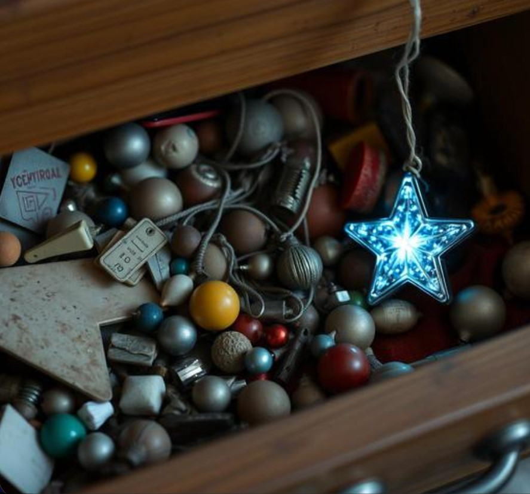

Somewhere in your house right now, there is a drawer. You know the one. It contains: a phone charger for a phone you no longer own, three scented candles you've never lit, a gift card with $4.18 left on it, and at least one gadget you were genuinely excited about for approximately four days in 2023.

This isn't a personal failing. It's just what happens to most gifts. Here's why, and what actually survives the drawer.
6 Reasons Most Birthday Gifts Get Forgotten
- They solve a problem nobody had. The gadget gift, the "as seen on TV" gift, the gift that requires its own charging cable — these are gifts in search of a use case, and most never find one.
- They're generic by design. Mass-market gifts are built to appeal broadly, which means they rarely connect to anything specific about the person receiving them. Generic in, forgettable out.
- They compete with things the person already owns. A new candle competes with the eleven candles already in the house. A new mug competes with the mug cabinet that's already at capacity.
- They have a shelf life. Flowers die. Food gets eaten. Trendy items go out of style roughly as fast as they came in.
- They require maintenance to matter. Plants need watering. Subscriptions need renewing. The moment upkeep becomes a chore, the goodwill of the gift starts working against it.
- They don't actually reference the relationship. The best gifts are good because of who gave them and why. A gift that could have come from anyone tends to get treated like it came from anyone.
What Actually Survives
Gifts that last tend to do the opposite of all six points above: they're specific to the person, they don't compete with anything else in the house, they don't expire, they require zero maintenance, and they obviously came from someone who knows the recipient.
This is, not coincidentally, exactly the gap a star on GalaxySpace fills. It's not a gadget. It's not a candle. It's a permanent, named point in the digital sky with a message only you would have written, viewable from any phone, forever, taking up zero physical space and requiring exactly nothing to maintain.
It costs less than a candle and never ends up in the drawer — mostly because there's no drawer it could end up in. You can create one for someone's birthday here in less time than it took to read this list.